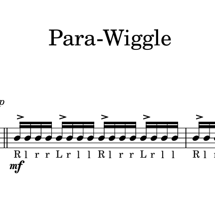
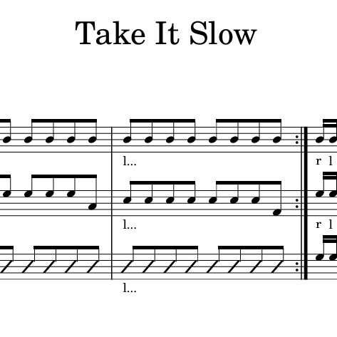

Sheet Music
|
 |
| Download Here |
| Para-Wiggle is a fan-favorite piece designed to practice and apply the technique behind paradiddle-based hybrid rudiments. While the starting tempo may feel slightly difficult for beginners, it is important to slow things down and stoke out every hit when first learning them. As you get more comfortable, understand the placement of diddles, and as you approach the written tempo begin diddling the double-strokes. Take your time, isolate tricky sections, and build control as you go. |
|
 |
| Download Here |
| Take It Slow is a diverse hybrid warm-up that packs multiple rudiments into a single exercise. Since this was initially written for a group, some sections seem a bit weird when playing solo. Nevertheless, it's a great exercise to focus on narrow practicing on specific instruments. Start by going section, paying extra attention to rudiments that seem harder than others. Then work on transitions, building up to running the full piece. Once you have this, practice full runs and adjust to a comfortable tempo and gradually shift to challenging speeds as you improve. |